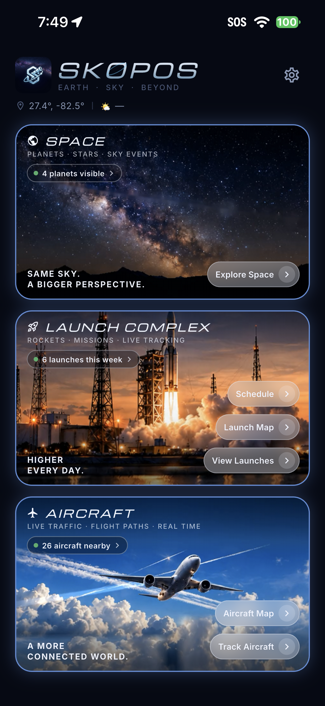
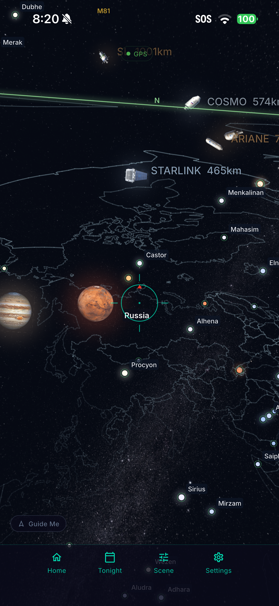
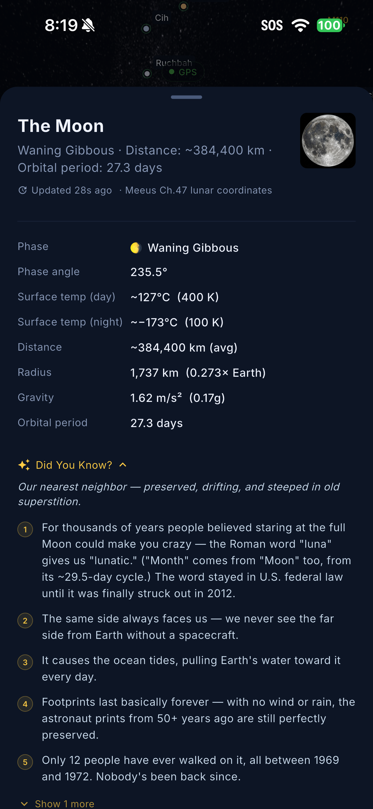
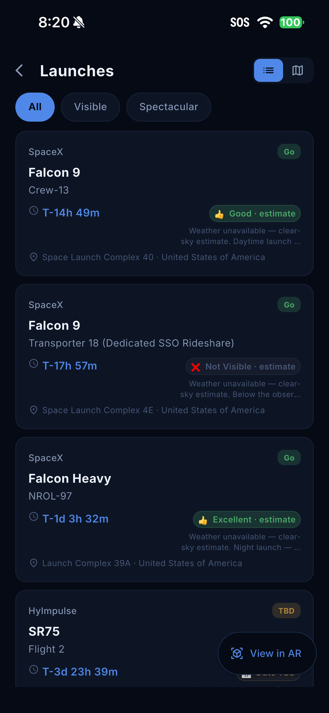
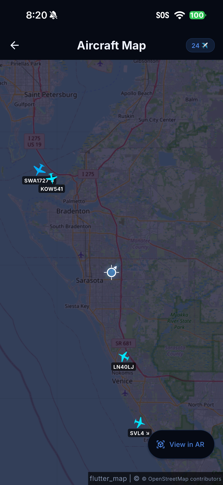

Skopos User Guide
iPhone & iPad · Updated September 30, 2026
Explore Earth, sky, and beyond. Follow the steps below to find objects, understand what the displays mean, and plan your next observing session.
Illustrations show the iPhone testing edition, version 0.3.24 build 166. Purchase instructions identify the upcoming App Store edition separately.
Getting started
Skopos brings sky exploration, launch schedules, aircraft tracking, and observing plans together. No Skopos account is required. This guide covers iPhone and iPad; screen layout varies with device size and orientation.
- Open Skopos and follow the camera and location prompts. Camera access supplies the live sky background. Location helps position the sky and find nearby aircraft, weather, and launch visibility.
- Read the location explanation before continuing. Some weather and aircraft requests send viewing coordinates directly to their providers.
- Allow notifications if you want event reminders. You can change permissions later in your device’s Settings.
- Start with the dashboard. Choose Explore Space, a launch option, or an aircraft option.
If permission was denied, return to the app’s permission screen or your device’s Settings to change it. Approximate location may reduce location-dependent accuracy. An internet connection is needed for fresh provider data.
Find your way around
The dashboard groups features into Space, Launch Complex, and Aircraft. Counts describe currently available data and can change as services refresh.
- Explore Space: open the sky scene.
- Schedule: browse upcoming launches. Launch Map opens the map, while View Launches opens a launch-focused sky scene.
- Aircraft Map: view traffic geographically. Track Aircraft: open the aircraft sky scene.
- Settings: use the gear icon to change preferences, reminders, and access options.
In the sky scene, the bottom controls include Home, Tonight, Scene, and Settings. Home returns to the dashboard. To choose your usual starting screen, open Settings → Default startup view and select Dashboard, Skyview AR, Launches, Aircraft Map, or Weather.

Explore the sky
- Open Explore Space. Hold your phone comfortably and turn slowly to explore different directions.
- Use the horizon, direction labels, and central aiming marker to orient yourself. The scene responds to device orientation and the viewing location.
- Tap a visible object to open its details. For example, the Moon sheet shows phase, distance, and other information.
- Drag a detail sheet upward to see more. Expand Did You Know? where available, and scroll to read the remaining facts.
- Use Guide Me when available to help point toward a selected target.
Object pictures and marker sizes aid identification; they are not a promise of what the object will look like to the naked eye. Objects below the horizon can appear against the globe/country outlines and are not necessarily visible from your location.
If the scene drifts or directions seem wrong, check location access, move away from magnetic interference, and let the device orientation settle. Compare with a known direction before relying on the view.

Adjust the scene
Open Scene to control what appears. Available switches include Constellations, Stars, Satellites, Aircraft, Launch Pads, Country Lines, Milky Way, Planets, and RA/Dec. Turn off layers you do not need to reduce label overlap.
Use Night Vision for the night-view appearance and Indoor for the indoor scene option. Homing Vibe controls vibration feedback associated with finding a target.
Sliders adjust the star magnitude cutoff, planet and satellite marker sizes, number of satellites shown, constellation line width and opacity, launch-pad size, country-line appearance, and Milky Way opacity. A larger star magnitude cutoff includes fainter stars. Marker-size changes affect the display, not actual object distances or sizes.
Plan an observing session with Tonight
Open Tonight from the sky scene. Its five tabs organize observing information:
- ISS Passes: review upcoming visible passes, their timing, and maximum elevation. An empty list can mean no visible passes are predicted in the displayed period.
- Planets: check viewing opportunities and the displayed Sun/Moon rise-and-set information.
- Showers: explore active and upcoming meteor showers and peak dates.
- Events: review upcoming astronomical events such as eclipses and conjunctions.
- Crew: browse the people currently listed in space, grouped by spacecraft, and open available biographies.
Where an event offers Add to calendar, open it, review the date, time, and destination calendar in Apple’s event editor, and choose Save or Cancel. Skopos does not read your calendar. Event times and visibility depend on location and the information available; recheck before heading out.

Follow rocket launches
- From the dashboard, open Schedule.
- Switch between All, Visible, and Spectacular to focus the list.
- Read the provider, rocket, mission, countdown, launch site, status, and visibility estimate on a card.
- Open a launch for details. Use available map, sky-view, calendar, or external coverage actions as needed.
- Use the list/map selector to change presentation, or open View in AR when shown.
A launch marked Go can still be delayed or scrubbed. Visibility labels describe an estimate from your viewing location, not a guarantee. If a card says Weather unavailable — clear-sky estimate, the estimate does not include current weather. Check the mission provider’s latest information near launch time.
The launch sky scene identifies launch sites and their direction. Open Scene to simplify the display or change launch-pad marker size. A site below your horizon is not a claim that a launch can be seen through the Earth.

Explore aircraft on the map and in the sky
Open Aircraft Map to see available traffic around the viewing area. Pan and zoom to inspect the map. Labels identify flights when the source provides a callsign. Tap an aircraft to inspect available information; View in AR switches to the sky presentation.
Use Track Aircraft from the dashboard to explore aircraft by direction. Tap a marker for its detail sheet, then drag the sheet upward to read more. Depending on coverage, details can include operator, callsign, registration, aircraft type, altitude, ground speed, track, vertical rate, squawk, and signal source. Photographs and routes may be unavailable.
Read the “Updated” age when judging freshness. Coverage varies, and a missing aircraft is not proof that the sky is empty. Altitude values are flight-data values, not necessarily height above your ground. Skopos is an exploration tool, not an air-traffic or navigation instrument.

Check weather and viewing conditions
Open Settings → Weather, or use your Weather startup view. Review the available stargazing suitability and forecast information. The map provides Clouds, Storms, and Both controls for the displayed layers.
Check the displayed source, time, and location. Forecasts and provider availability can change. A missing layer or “unavailable” message does not mean clear conditions. If a request fails, confirm internet access and location permission, then return to the view to try again.
Set reminders and quiet hours
- Open Settings and find Notifications.
- Enable the categories you want, such as ISS passes, meteor showers, astronomical events, planets, or launches.
- Grant notification permission when prompted. If it was denied, use the offered settings action or device Settings to enable it.
- Set Quiet hours to match your preferred overnight period.
Skopos schedules supported reminders locally using available event data. Your device controls delivery, and Focus or notification settings can silence alerts. Calendar entries and local reminders are separate: saving an event does not automatically mean a Skopos notification category is enabled.
After an expired trial without a lifetime unlock, new feature reminders pause. Check access status if reminders stop along with other features.
Free trial, lifetime unlock, and gift codes
In the App Store edition, open Settings → Trial and access. Choose Start free 30-day trial to activate it with your Apple Account. The trial lasts 720 hours from its original Apple activation. There is no subscription, automatic renewal, or automatic charge at the end.
After the trial, full access requires a one-time lifetime unlock. The U.S. price is $9.99; the app and Apple confirmation show the applicable local price. Choose Unlock forever, review Apple’s purchase sheet, and confirm only if you want the purchase. Canceling does not purchase access.
Use Restore Purchases when moving to another device or reinstalling, with the Apple Account that owns the purchase. Restoring a trial does not restart its clock. Apple refunds or revocations can remove an unlock.
To use an eligible gift, select Redeem Code and follow Apple’s redemption sheet. A free lifetime gift grants the same unlock without payment. A code’s expiry limits when it may be redeemed, not the duration of the granted lifetime access. One-time codes cannot be reused.
If the price is unavailable, check the connection and use Retry App Store. Pending approval is not a completed purchase. Settings, privacy information, and support remain available after trial expiry; your saved data are preserved. Optional support contributions do not purchase features.
Permissions, privacy, and offline use
Skopos does not require a separate NSF Labs account. The camera provides the live background; Skopos does not save or upload that camera feed. Location and viewed map areas can be sent directly to external services to retrieve requested information. The privacy policy explains the providers, local storage, purchases, and your choices.
Without a connection, some previously obtained data may still be visible, while live aircraft, launches, maps, weather, images, or crew information may fail to refresh. Treat old timestamps as stale information. Open the app with a connection again to refresh services; do not assume cached information is live.
Manage camera, location, and notification access in your device’s Settings. Backups and device transfers follow Apple’s settings. Deleting the app is not the same as deleting provider records or resetting an Apple trial.
Troubleshooting and support
- Sky labels overlap
- Open Scene, disable unneeded layers, lower the satellite count, or reduce marker sizes. Point toward a less crowded area.
- No nearby aircraft or launch data
- Check the network, viewing location, provider update age, and any active filters. Services can temporarily fail or lack coverage.
- Camera background is missing
- Check camera permission and the Indoor scene setting. Reopen the scene after changing permissions.
- No reminders arrive
- Check category switches, notification permission, quiet hours, device Focus settings, and trial/lifetime access.
- A purchase or gift did not unlock access
- Use the App Store edition, verify the Apple Account, and try Restore Purchases. Check whether Apple reports pending approval, cancellation, an expired code, or a code already redeemed.
Open Settings → Report a bug or Request a feature, or email info@nsflabs.org. Include the device model, app version/build, steps taken, expected result, and what happened. Attach a relevant screenshot if useful.
If support asks for diagnostics, review the log before sharing; it may include request or location information. Diagnostic tools are not needed for ordinary use. Never send passwords, payment details, or private gift-code batches in a bug report.